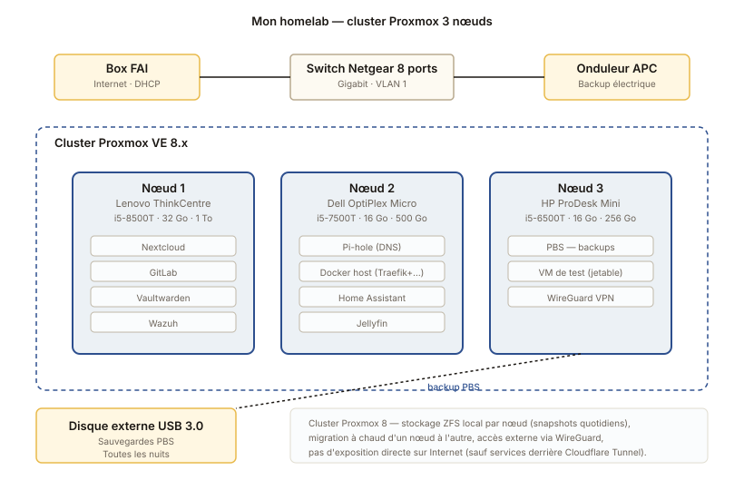
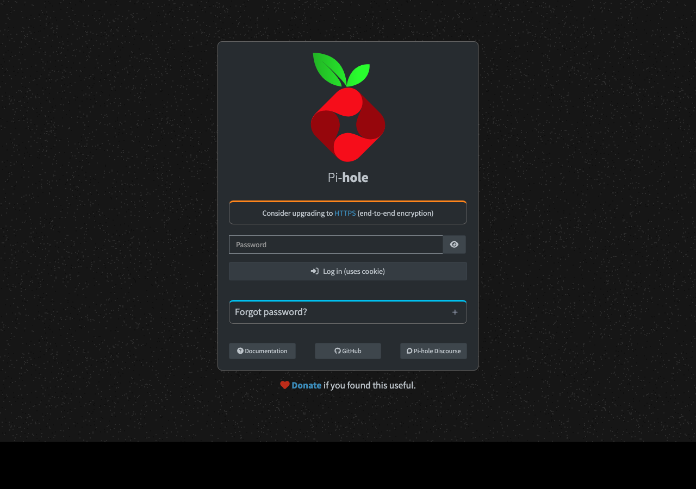
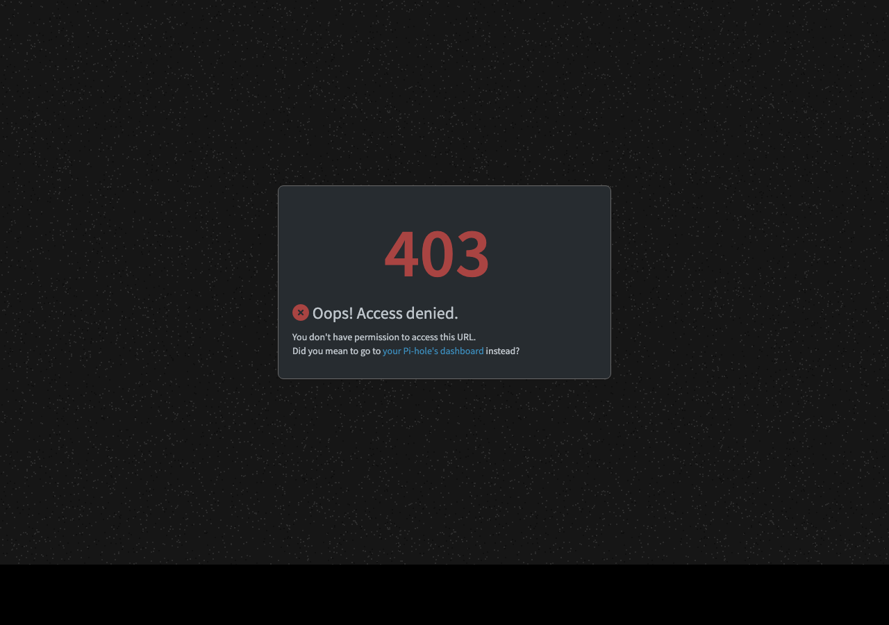

Mon homelab Proxmox
Trois mini-PC d'occasion en cluster Proxmox, qui hébergent mes services personnels et qui me servent de terrain d'expérimentation permanent.
L'architecture

L'idée
Le homelab c'est ce qui m'a fait progresser le plus vite. Quand j'apprends quelque chose en cours, je veux pouvoir le tester chez moi, le casser, le remonter, sans risquer de planter quoi que ce soit d'important. Quand je veux essayer un nouvel outil, je le déploie chez moi, je l'utilise pour de vrai pendant quelques semaines, et je décide si je le garde.
Au-delà de l'apprentissage, c'est aussi devenu mon hébergement personnel : mots de passe, calendrier, fichiers, photos. Tout ce qui sortait avant chez Google ou ailleurs est maintenant chez moi.
Le matériel
Trois mini-PC d'occasion achetés sur LeBonCoin, choisis pour leur faible consommation et leur taille (ils tiennent dans un coin du salon, sans bruit) :
- Nœud 1 — Lenovo ThinkCentre Tiny, i5-8500T, 32 Go RAM, 1 To NVMe
- Nœud 2 — Dell OptiPlex Micro, i5-7500T, 16 Go RAM, 500 Go NVMe + 2 To SATA
- Nœud 3 — HP ProDesk Mini, i5-6500T, 16 Go RAM, 256 Go NVMe + 1 To SATA
- Un switch 8 ports gigabit Netgear
- Un onduleur APC qui m'a déjà sauvé deux fois en cas de coupure
Coût total environ 600 €, beaucoup moins qu'un seul vrai serveur d'occasion qui ferait plus de bruit qu'un sèche-cheveux.
Le cluster Proxmox
Les trois mini-PC sont en cluster Proxmox VE 8. L'avantage, c'est que je peux migrer une VM d'un nœud à l'autre à chaud (quasi sans interruption de service) quand je veux faire de la maintenance ou redémarrer une machine.
Le stockage est en ZFS local sur chaque nœud, avec snapshots automatiques quotidiens. Pas de stockage partagé pour l'instant, parce que ça nécessiterait du 10 Gbps que je n'ai pas, mais les sauvegardes Proxmox Backup Server (PBS) tournent depuis le nœud 3 vers un disque externe USB 3.0 toutes les nuits.
Les services hébergés
Une partie en VMs, l'autre en conteneurs Docker (voir le projet Docker). Les principaux :
- Pi-hole — DNS filtrant qui bloque les pubs et trackers (capture plus bas)
- Vaultwarden — gestionnaire de mots de passe (Bitwarden)
- Nextcloud — cloud personnel (calendrier, fichiers, contacts)
- GitLab — pour mes scripts et le code de mes projets
- Wazuh — détection d'intrusion, je joue avec les règles
- Jellyfin — serveur média pour la maison
- Home Assistant — un peu de domotique (capteurs, lumières)
Pi-hole en action
Pi-hole est l'un des premiers services que j'ai installés sur le homelab. Il fait office de DNS pour tout le réseau de la maison et bloque les pubs et trackers au niveau DNS.


Sécurité et accès depuis l'extérieur
Je ne publie aucun service directement sur Internet, c'est trop risqué. Pour accéder à mes services à l'extérieur, je passe par un VPN WireGuard qui tourne sur un Raspberry Pi en DMZ chez moi. Une fois connecté au VPN, j'accède aux services en local.
Pour les services que je veux accessibles publiquement (très rares), je passe par un Cloudflare Tunnel. Pas d'ouverture de port, pas d'IP exposée.
Ce que j'apprends en continu
Tout. Sérieusement. Chaque service installé m'a appris quelque chose : la gestion des certificats avec Let's Encrypt, la configuration LDAP, la mise en place d'un reverse proxy, la lecture de logs, la sauvegarde correcte des bases de données, la sécurisation d'un serveur exposé.
Le homelab c'est un budget important au début, mais sur deux ans c'est largement amorti par tout ce que j'ai appris dessus. Je le recommande à toute personne qui veut faire de l'admin sys au-delà des cours.